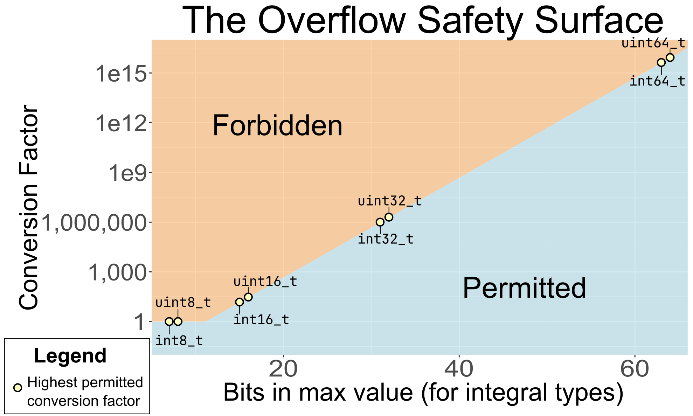

Overflow¶
To convert a quantity in a program to different units, we need to multiply or divide by a conversion factor. Sometimes, the result is too big to fit in the type: a problem known as overflow.
Units libraries generate these conversion factors automatically when the program is built, and apply them invisibly. This amazing convenience comes with a risk: since users don’t see the conversion factors, it’s easy to overlook the multiplication that’s taking place under the hood. This is even more true in certain “hidden” conversions, where most users don’t even realize that a conversion is taking place!
Hidden overflow risks¶
Consider this comparison:
Even though the quantities have different units, this code compiles and produces a correct result.
It turns out that meters(11) is roughly 0.2% larger than yards(12), so result is true. But
how exactly do we compute that result from these starting numeric values of 11 and 12?
The key is to understand that comparison is a common unit
operation. Before we can carry it out, we must convert both inputs
to their common unit — that is, the largest unit that evenly divides both
meters and yards. In this case, the size of that unit is 800 micrometers, giving a conversion
factor of 1250 for meters, and 1143 for yards. The library multiplies the underlying values 11
and 12 by these respective factors, and then simply compares the results.
Now that we have a fuller understanding of what’s going on under the hood, let’s take another look
at the code. When we see something like meters(11) > yards(12), it’s certainly not obvious at
a glance that this will multiply each underlying value by a factor of over 1,000! Whatever approach
we take to mitigating overflow risk, it will need to handle these kinds of “hidden” cases as well.
Mitigation Strategies¶
Over the decades that people have been writing units libraries, several approaches have emerged for dealing with this category of risk. That said, there isn’t a consensus about the best approach to take — in fact, at the time of writing, new strategies are still being developed and tested!
It’s also worth noting that this problem mainly applies to integral types. Floating point types can
overflow too, but it happens far less often in practice. Even the smallest, float, has a range of
10^{38}, while the diameter of the observable universe measured in atomic diameters is “only”
about 10^{37}!1
Of course, many domains prefer the simplicity and interpretability of integral types. This avoids
some of the more counterintuitive aspects of floating point arithmetic — for example, did you know
that the difference between consecutive representable double values can be greater than
10^{292}? With integers, we can bypass all this complexity, but the price we pay is the need to
handle overflow. Here are the main strategies we’ve seen for doing so.
Do nothing¶
This is the simplest approach, and probably also the most popular: make the users responsible for avoiding overflow. The documentation may simply warn them to check their values ahead of time, as in this example from the bernedom/SI library.
While this approach is perfectly valid, it does put a lot of responsibility onto the end users, many of whom may not realize that they have incurred it. Even for those who do, we’ve seen above that many unit conversions are hard to spot. It’s reasonable to assume that this approach leads to the highest incidence of overflow bugs.
Curate user-facing types¶
The std::chrono library, a time-only units
library, takes a different approach. It uses intimate knowledge of the domain to craft its
user-facing types such that they all cover the same (very generous) range of values. Specifically,
every std::chrono::duration type shorter than a day — everything from std::chrono::hours, all
the way down to std::chrono::nanoseconds — is guaranteed to be able to represent at least ±292
years.
As long as users’ durations are within this range — and, as long as they stick to these primary user-facing types — they can be confident that their values won’t overflow.
This approach works very well in practice for the (great many) users who can meet both of these
conditions. However, it doesn’t translate well to a multi-dimensional units library: since there
are many dimensions, and new ones can be created on the fly, it’s infeasible to try to define
a “practical range” for all of them. Besides, users can still form arbitrary
std::chrono::duration types, and they may not realize the safety they have given up in doing so.
Adapt to risk¶
Fundamentally, there are two contributions to the level of overflow risk:
-
The size of the conversion factor: bigger factors mean more risk.2
-
The largest representable value in the destination type: larger max values mean less risk.
Therefore, we should be able to create an adaptive policy that takes these factors into account. The key concept is the “smallest overflowing value”. For every combination of “conversion factor” and “type,” there is some smallest starting-value that will overflow. The simplest adaptive policy is to forbid conversions when that smallest value is “small enough to be scary”.
How small is “scary”? Here are some considerations.
-
Once our values get over 1,000, we can consider switching to a larger SI-prefixed version of the unit. (For example, lengths over 1000\,\text{m} can be more concisely expressed in \text{km}.) This means that if a value as small as 1,000 would overflow — so small that we haven’t even reached the next unit — we should definitely forbid the conversion.
-
On the other hand, we’ve found it useful to initialize, say,
QuantityI32<Hertz>variables with something likemega(hertz)(500). Thus, we’d like this operation to succeed (although it should probably be near the border of what’s allowed).
Putting it all together, we settled on a value threshold of 2‘147. If we can convert
this value without overflow, then we permit the operation; otherwise, we don’t. We picked this
value because it satisfies our above criteria nicely. It will prevent operations that can’t handle
values of 1,000, but it still lets us use \text{MHz} freely when storing \text{Hz} quantities in
int32_t.
Plot: the Overflow Safety Surface¶
This policy lends itself well to visualization. For each integral type, there is some highest
permitted conversion factor under this policy. We can plot these factors for each of the common
integral types (int8_t, uint32_t, and so on). If we then “connect the dots”, we get a boundary
that separates allowed conversions from forbidden ones, permitting bigger conversions for bigger
types. We call this abstract boundary the “overflow safety surface”, and it’s the secret
ingredient that lets Au users use a wide variety of integral types with confidence.

Check every conversion at runtime¶
While the overflow safety surface is a leap forward in safety and flexibility, it’s still only
a heuristic. There will always be valid conversions which it forbids, and invalid ones which it
permits. On the latter point, note that adding an intermediate conversion can defeat the safety
check: the overflow in meters(10u).as(nano(meters)) would be caught, but the overflow in
meters(10u).as(milli(meters)).as(nano(meters)) would not.
One way to guarantee doing better is to check every conversion at runtime. Some users may recoil at the idea of doing runtime work in a units library, but it’s easy to show that this use case is innocuous. Consider: it’s very hard to imagine a valid use case for needing to perform unit conversions in a “hot loop”. Therefore, the extra runtime cost — merely a few cycles at most — won’t meaningfully affect the performance of the program: it’s a bargain price to pay for the added safety.
Of course, in order to check every conversion at runtime, you need to decide what to do when
a conversion doesn’t work. This is hard in general, because there is no “one true error handling
strategy”. Exceptions, C++17’s std::optional, C++23’s std::expected, and other strategies each
have their place. For a library that aims to support a wide variety of projects, it’s an impossible
choice.
Fortunately, the problem decomposes favorably into two steps.
-
Figure out which specific conversions are lossy. This is the hard part, but Au can do it!
-
Write a generic checked conversion function using the preferred error handling mechanism. The owners of a project will have to do this, but this is easy if Au provides the first part.
Here’s a complete worked example of how you would do this in a codebase using C++17’s
std::optional.
template <typename U, typename R, typename TargetUnitSlot>
constexpr auto try_converting(au::Quantity<U, R> q, TargetUnitSlot target) {
return is_conversion_lossy(q, target)
? std::nullopt
: std::make_optional(q.coerce_as(target));
}
The goal of is_conversion_lossy is to produce an implementation for each individual conversion
(based on both the numeric type, and the conversion factor) that is as accurate and efficient as
an expertly hand-written implementation. If it passes those checks, then it’s safe and correct to
call .coerce_as instead of simply .as: we can override the approximate safety checks of the
latter because we’ve performed an exact safety check.
An example of the kind of details we take care of
When we say “expertly hand-written”, we mean it. We even handle obscure C++ minutae such as integer promotion!
Consider the conversion from yards(int16_t{1250}) to meters. Under the hood, this
conversion first multiplies by int16_t{1143}, and then divides by int16_t{1250}. The
multiplication produces 1,428,750 — but the maximum int16_t value is only 32,767. Looks
like a pretty clear case of overflow.
However, the product of two int16_t values is not (usually) an int16_t value! On most
architectures, it gets converted to int32_t, due to integer promotion. This intermediate type
can hold the result of the multiplication. What’s more, the subsequent division by
int16_t{1250} brings the final result back into the range of int16_t.
Au’s implementation of is_conversion_lossy will correctly return false on architectures
where this promotion happens, and true on architectures where it doesn’t. If this sounds like
the kind of detail you’d rather not worry about, go ahead and use Au’s utilities!
At the time of writing, Au is the only units library we know that provides conversion checkers to do
this heavy lifting. We’d like to see other units libraries try it out as well! Meanwhile, even on
our end, there’s still more work to do — such as adding “explicit rep” versions of these
utilities, and supporting QuantityPoint. You can track our progress on this feature in issue
#110.
Summary¶
The hazard of overflow lurks behind every unit conversion — even the “hidden” conversions that are hard to spot. To maximize safety, we need a strategy to mitigate this risk. Au’s novel overflow safety surface is a big step forward, adapting to the level of risk actually present in each specific conversion. But the most robust solution of all is to make it as easy as possible to check every conversion as it happens, and be prepared for it to fail.
-
Here, we take the radius of the observable universe as 46.6 billion light years, and the diameter of a hydrogen atom as 0.1 nanometers. ↩
-
Note that we’re implicitly assuming that the conversion factor is simply an integer. This is always true for the cases discussed in this section, because we’re talking about converting quantity types with integral rep. If the conversion factor were not an integer, then we would already forbid this conversion due to truncation, so we wouldn’t need to bother considering overflow. ↩